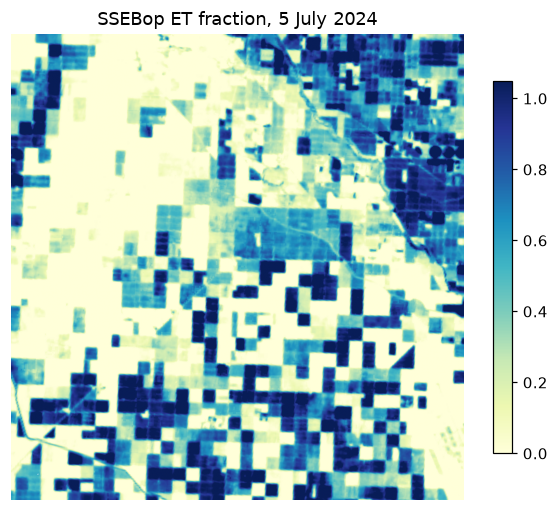
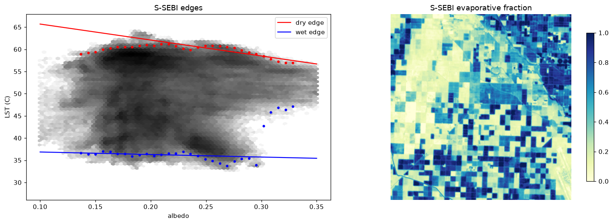
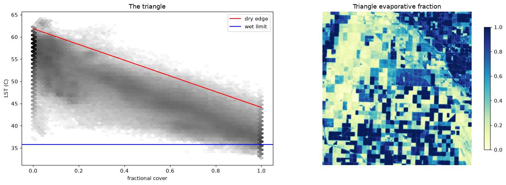
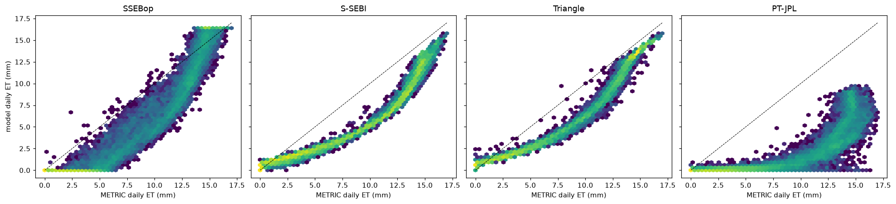
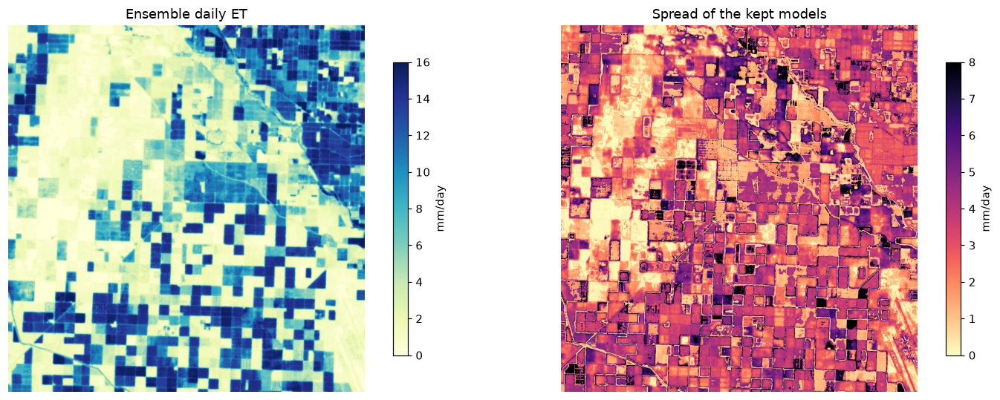

SEBAL and METRIC solve the aerodynamics of sensible heat at every pixel. A family of simpler models skips that step. SSEBop places each pixel’s temperature between a wet and a dry limit set by air temperature and net radiation. S-SEBI and the triangle method read the limits from the scatter of surface temperature against albedo or vegetation cover in the image itself. PT-JPL starts from the Priestley-Taylor equation for potential ET and reduces it with plant and soil moisture constraints, without a thermal band at all. Each makes different assumptions, and comparing them on the same scene shows where they agree, where they disagree, and why combining several models, as OpenET does, is attractive. This notebook runs all four on the 5 July 2024 scene, compares them with METRIC, and builds a small ensemble with its spread.
Overview
SSEBop: operational simplified surface energy balance
Senay et al. (2013, 2023) define, for each pixel and day, a cold (wet) limit and a hot (dry) limit of LST:
Cold limit Tc = c Tmax, where Tmax is the daily maximum air temperature and c is calibrated as the typical ratio of LST to Tmax over well watered, dense vegetation (NDVI of at least 0.7).
Hot limit Th = Tc + dT, where dT = Rn rah / (rho cp) is the temperature difference a dry, bare surface needs to carry the clear-sky daily net radiation Rn as sensible heat, with a fixed aerodynamic resistance of 110 s/m.
The ET fraction is the position of LST between the limits, ETf = (Th - Ts) / dT, clipped to 0 to 1.05, and actual ET is ETa = ETf k ETref. Because dT and c come from climate and the image, SSEBop needs no anchor pixels and no wind, and it runs globally (USGS FEWS NET) and in OpenET.
S-SEBI: simplified surface energy balance index
Roerink et al. (2000) observed that in an image with both wet and dry areas the scatter of LST against albedo has a dry edge (the hottest LST at each albedo, decreasing at high albedo where bright soil reflects much of the radiation) and a wet edge (the coolest LST, rising slowly with albedo). With the two edges fitted as lines, EF = (T_H - Ts) / (T_H - T_LE), where T_H and T_LE are the dry and wet edge temperatures at the pixel’s albedo. No weather data are needed for the fraction.
The triangle method
Jiang and Islam (2001) use the LST against fractional cover scatter. The dry edge gives the hottest possible LST at each cover, the coolest pixels the wet limit. A Priestley-Taylor parameter phi runs from phi_max fc at the dry edge to phi_max = 1.26 at the wet limit, and EF = phi Delta / (Delta + gamma).
PT-JPL
Fisher et al. (2008) start from the Priestley-Taylor equation, LE = alpha Delta / (Delta + gamma) (Rn - G) with alpha = 1.26, and split it into canopy transpiration, soil evaporation and interception, each reduced by constraints:
Constraint
Formula
Meaning
fwet
RH^4
wet canopy fraction
fg
fAPAR / fIPAR
green fraction of the canopy
fT
exp(-((Ta - Topt) / Topt)^2)
temperature limit of photosynthesis
fM
fAPAR / fAPARmax
plant moisture
fSM
RH^(VPD / beta)
soil moisture from atmospheric dryness
PT-JPL uses no thermal band: it sees water stress only through vegetation indices and the dryness of the air. Over irrigated land in a dry climate this is its main weakness, because the air above an irrigated field says little about the field’s soil moisture.
Ensembles
Each model’s errors come from different assumptions, so their average is often more accurate than any one of them. OpenET computes, for each pixel and month, the ensemble of its six models after removing up to two outliers with the median absolute deviation (MAD) rule, and publishes the ensemble mean together with each model.
Explain the wet and dry limits of SSEBop, S-SEBI and the triangle method, and the constraints of PT-JPL.
Calibrate SSEBop’s c factor and dT for a scene and map its ET fraction.
Fit the dry and wet edges of the albedo and LST scatter (S-SEBI) and of the cover and LST scatter (triangle).
Run PT-JPL and see what a model without a thermal band misses.
Put five models on a common footing, compare them by crop, and build an ensemble with an outlier rule and a spread map.
Data
The 5 July 2024 Landsat 8 scene (sd.load_scene), its energy balance inputs (sd.energy_inputs), ERA5 daily and overpass weather, and the METRIC result of notebook 06 (outputs/metric_20240705.nc, recomputed if missing).
Contents
Setup
SSEBop
S-SEBI
The triangle method
PT-JPL
Five models on a common footing
An ensemble and its spread
Summary and exercises
Setup
Installation. This notebook needs installation option 5 (core, spatial analysis, spatial statistics, geostatistics and remote sensing): pip install "geolattice[remote-sensing]". See “Installation options” in the GeoLattice README.
Code
import warnings # warning controlwarnings.filterwarnings("ignore") # hide routine library warningsfrom pathlib import Path # file pathsimport matplotlib.pyplot as plt # figuresimport numpy as np # arraysimport pandas as pd # tablesimport rioxarray # noqa: F401 (registers the .rio accessor)import xarray as xr # labelled rastersimport geolattice # GeoLatticeimport geolattice.rsense.surface_energy_balance as seb # energy balance and ET modelsimport seb_data as sd # chapter helper: downloads, caches and loads the scenesplt.rcParams.update({"figure.dpi": 110}) # figure resolutionOUT = Path("outputs") # results written by this chapterOUT.mkdir(exist_ok=True) # create it if neededprint("GeoLattice", geolattice.__version__, "| data folder", sd.DATA.relative_to(sd.DATA.parents[3])) # versions and pathsds = sd.load_scene() # Landsat 8, 5 July 2024p = sd.energy_inputs(ds) # NDVI, albedo, LST, Rn, G, reference ETa = ds.attrs # weatherext = [float(ds.x.min()), float(ds.x.max()), float(ds.y.min()), float(ds.y.max())] # map extentpath = OUT /"metric_20240705.nc"# METRIC result of notebook 06metric = xr.open_dataset(path).load() if path.exists() else sd.run_metric_scene(ds, p) # read or recomputeGROUPS = {"Tree crops": [75, 204, 76, 211, 212, 217], "Grapes": [69], "Annual crops": [54, 2, 1, 36, 208, 24, 21, 51],"Fallow": [61], "Grass and shrubs": [176, 152], "Developed": [121, 122, 123, 124]} # CDL codes per groupdef by_group(**layers): # mean of each layer per crop group df = xr.Dataset(layers).assign(cdl=ds.cdl).to_dataframe().select_dtypes("number").dropna() # one row per pixel, numbers onlyreturn pd.DataFrame({g: df[df.cdl.isin(c)].drop(columns=["cdl", "spatial_ref"], errors="ignore").mean()for g, c in GROUPS.items()}).T # group means
GeoLattice 0.3.49 | data folder GeoLattice/Data/08_remote_sensing/08_12_surface_energy_balance
SSEBop
The c factor compares LST with the daily maximum air temperature over dense vegetation. dT uses the clear-sky daily net radiation of a reference surface (albedo 0.23), computed as in FAO-56, and the fixed resistance of 110 s/m.
Code
tmax_k = a["tmax_c"] +273.15# ERA5 daily maximum, Ktc, c = seb.cold_reference_temperature(p["lst"], p["ndvi"], tmax_k) # cold limit and c factorra =float(seb.extraterrestrial_radiation_daily(sd.WESTSIDE["lat"], a["doy"])) # MJ m-2 d-1z = p["z"]; rso = (0.75+2e-5* z) * ra # clear-sky shortwave, MJ m-2 d-1ea_d =float(seb.actual_vapour_pressure(t_dew_c=a["t_dew_daily_c"])) # daily vapour pressure, kParnl =4.901e-9* ((a["tmax_c"] +273.16) **4+ (a["tmin_c"] +273.16) **4) /2* (0.34-0.14* ea_d **0.5) # clear-sky net longwavern_cs = (0.77* rso - rnl) /0.0864# clear-sky daily net radiation, W/m2dT = seb.dt_from_climate(rn_cs, tmax_k, float(p["pressure"].mean())) # hot - cold limit difference, Kssebop = seb.run_ssebop(p["lst"], tc, dT, eto=p["etr_daily"], k=1.0) # ETf and ETa with the alfalfa referenceprint(f"c = {c:.4f}, Tc = {float(tc) -273.15:.1f} C | clear-sky Rn = {rn_cs:.0f} W/m2, dT = {float(dT):.1f} K, Th = {float(tc + dT) -273.15:.1f} C") # limitsprint(f"pixels at ETf = 0 (hotter than Th): {float((ssebop.etf ==0).mean()):.1%} | at the 1.05 cap: {float((ssebop.etf >=1.05).mean()):.1%}") # clippingfig, ax = plt.subplots(figsize=(7, 5.5)); im = ax.imshow(ssebop.etf, extent=ext, cmap="YlGnBu", vmin=0, vmax=1.05) # ETf mapplt.colorbar(im, ax=ax, shrink=0.8); ax.set_title("SSEBop ET fraction, 5 July 2024"); ax.axis("off"); plt.show() # draw
c = 0.9760, Tc = 38.9 C | clear-sky Rn = 166 W/m2, dT = 16.7 K, Th = 55.7 C
pixels at ETf = 0 (hotter than Th): 32.0% | at the 1.05 cap: 5.9%

SSEBop’s limits come from the weather and a scene-wide c, not from two pixels. Here c is 0.976, so the cold limit (38.9 C) is 3.7 K warmer than METRIC’s cold anchor (35.2 C), and the hot limit (55.7 C) is 4.3 K cooler than METRIC’s hot anchor (60.0 C). The narrower range has two effects: 6 % of pixels, the coolest fields, reach the cap of 1.05, and 32 % of pixels, the hot fallow land and rangeland, are hotter than the hot limit and get zero ET. SSEBop is run here with the alfalfa reference and k = 1 so that all models scale with the same reference; the operational SSEBop of OpenET uses grass reference ET with a scaling factor.
S-SEBI
seb.ssebi bins the albedo axis, takes the 99th and 1st percentile LST in each bin, fits the dry edge to the bins above the albedo of the hottest bin and the wet edge below it, and returns EF.
dry edge T_H = 69.3 C + -35.9 albedo | wet edge T_LE = 37.4 C + -5.7 albedo

The scatter has the textbook shape: the hottest LST rises with albedo up to about 0.2 (darker surfaces are hotter only when they are also dry) and then falls, as brighter surfaces reflect more sunlight. The dry edge is fitted above that turning point (T_H falls by about 3.6 K per 0.1 of albedo) and the wet edge below it, where it is almost flat near 36 to 37 C. Above an albedo of 0.3 there are no wet pixels, and the wet edge is an extrapolation. EF follows the irrigated fields, but the wet edge is the coolest 1 % of every bin, so the method assumes some pixels at every albedo are fully wet.
dry edge Tmax(fc) = 61.9 C -17.7 fc | wet limit 35.8 C

The scatter shows the classic triangle, with a dry edge falling from about 60 C over bare soil toward the wet limit at full cover. The ceiling of EF = phi Delta / (Delta + gamma) is 1.26 Delta / (Delta + gamma), about 1.0 at the air temperature of this day, so the triangle cannot represent fields that draw heat from the air either.
PT-JPL
PT-JPL needs net radiation, NDVI, SAVI (with the usual L = 0.5), air temperature, vapour pressure and pressure. The optimum temperature for growth Topt is set to 25 C here; Fisher et al. derive it for each pixel from the climatology of the vegetation.
Code
savi05 = seb.savi(p["sr"].red, p["sr"].nir, L=0.5) # SAVI with L = 0.5pt = seb.priestley_taylor_jpl(p["rn"], p["ndvi"], savi05, a["t_air_c"], a["ea_kpa"], float(p["pressure"].mean()), g=p["g"], topt_c=25.0) # PT-JPLes =float(seb.saturation_vapour_pressure(a["t_air_c"])) # kParh = a["ea_kpa"] / es # relative humidity at the overpassprint(f"RH {rh:.2f}, VPD {es - a['ea_kpa']:.2f} kPa -> fwet = {rh **4:.5f}, fSM = {rh ** ((es - a['ea_kpa']) /1.0):.5f}; "f"fT = {np.exp(-((a['t_air_c'] -25) /25) **2):.2f}") # the atmospheric constraintsby_group(LE_canopy=pt.le_c, LE_soil=pt.le_s, LE_interception=pt.le_i, LE_total=pt.le, LE_metric=metric.le).round(0) # per crop group
With 9 % relative humidity and a vapour pressure deficit above 6 kPa, PT-JPL’s soil moisture constraint fSM is essentially zero, so soil evaporation vanishes everywhere, including under irrigated orchards whose wetted soil does evaporate. Canopy transpiration is limited by the temperature constraint (40 C against an optimum of 25 C) and by fM. The model has no way to tell an irrigated field from a dry one except through its greenness, and it gives much less LE than METRIC over the crops.
Five models on a common footing
The models differ in two ways at once: how they estimate the instantaneous energy partition, and how they scale it to a day (METRIC and SSEBop with reference ET; S-SEBI, the triangle and PT-JPL with net radiation or EF). To compare the first part alone, every model’s instantaneous LE is turned into a reference ET fraction, ET_inst / ETr_inst, and scaled with the same daily alfalfa reference ET. SSEBop’s daily ETf is used directly.
Code
lam = seb.latent_heat_of_vaporization(p["lst"]) # J/kgto_etrf =lambda le: (3600* le / lam / p["etr_inst"]).clip(0, 1.3) # instantaneous LE -> ETrFfractions = {"METRIC": metric.etrf, "SSEBop": ssebop.etf, "S-SEBI": to_etrf(ss.le), "Triangle": to_etrf(tri.le), "PT-JPL": to_etrf(pt.le)} # one fraction per modeldaily = xr.concat([f * p["etr_daily"] for f in fractions.values()], dim=pd.Index(list(fractions), name="model")) # daily ET, mmra24 =float(seb.extraterrestrial_radiation_daily(sd.WESTSIDE["lat"], a["doy"])) *1e6/86400# W/m2rn24 = seb.daily_net_radiation(a["rs_daily_mj"] *1e6/86400, p["albedo"], ra24=ra24) # 24 h net radiation, W/m2native = {"S-SEBI": seb.instantaneous_to_daily(ss.ef, method="ef", rn24=rn24)} # S-SEBI with its own EF scalingtab = pd.concat({m: by_group(et=daily.sel(model=m)).et for m in fractions}, axis=1) # mean daily ET per crop group and modeltab["S-SEBI, EF x Rn24"] = by_group(et=native["S-SEBI"]).et # S-SEBI with its native scaling, for contrasttab.round(2) # mm/day
METRIC
SSEBop
S-SEBI
Triangle
PT-JPL
S-SEBI, EF x Rn24
Tree crops
10.73
7.70
7.17
8.32
2.27
4.05
Grapes
12.57
10.65
8.50
10.41
4.06
4.52
Annual crops
9.78
8.26
6.82
8.06
3.41
3.61
Fallow
2.72
0.27
1.63
1.61
0.08
1.26
Grass and shrubs
4.12
1.21
2.12
2.61
0.35
1.55
Developed
6.24
2.83
3.32
3.80
0.45
2.26
Code
flat = daily.stack(pix=("y", "x")).dropna("pix").transpose("pix", "model") # pixels with every modelsamp = flat.isel(pix=np.random.default_rng(0).choice(flat.sizes["pix"], 20000, replace=False)) # sample for plottingr = pd.DataFrame(np.corrcoef(flat.values.T), index=list(fractions), columns=list(fractions)) # correlation between modelsdisplay(r.round(2)) # agreement in patternfig, ax = plt.subplots(1, 4, figsize=(18, 4.2), sharey=True) # four scattersfor a_, m inzip(ax, ["SSEBop", "S-SEBI", "Triangle", "PT-JPL"]): # every other model a_.hexbin(samp.sel(model="METRIC"), samp.sel(model=m), gridsize=50, bins="log", extent=(0, 17, 0, 17)); a_.plot([0, 17], [0, 17], "k--", lw=0.7) # vs METRIC a_.set_xlabel("METRIC daily ET (mm)"); a_.set_title(m) # labelsax[0].set_ylabel("model daily ET (mm)"); plt.tight_layout(); plt.show() # draw
METRIC
SSEBop
S-SEBI
Triangle
PT-JPL
METRIC
1.00
0.94
0.95
0.97
0.81
SSEBop
0.94
1.00
0.98
0.98
0.90
S-SEBI
0.95
0.98
1.00
0.99
0.89
Triangle
0.97
0.98
0.99
1.00
0.90
PT-JPL
0.81
0.90
0.89
0.90
1.00

The thermal models (METRIC, SSEBop, S-SEBI and the triangle) agree closely on the spatial pattern, with correlations of 0.94 to 0.99, because all of them read the same LST contrast. They disagree on the level. METRIC is highest for every group, because its cold anchor is allowed to draw heat from the air; S-SEBI and the triangle cap the fraction near Rn - G and give 1.5 to 3.5 mm less over the crops; SSEBop sits between them over crops and near zero over fallow land, where its narrow limits put many pixels at zero. PT-JPL has the weakest correlation (0.81 to 0.90) and by far the lowest values, as expected for a model without a thermal band in a scene where water, not greenness, separates the fields. The last column shows that S-SEBI’s native daily scaling (EF times Rn24) roughly halves its daily ET over the crops compared with the same fraction scaled with reference ET, the same contrast as between SEBAL and METRIC in notebook 06.
An ensemble and its spread
The ensemble follows the OpenET idea: at each pixel, models further than two scaled median absolute deviations from the median are dropped, and the rest are averaged. The spread (range of the remaining models) shows where the models disagree.
Code
med = daily.median("model") # per-pixel median, mmmad =1.4826* np.abs(daily - med).median("model") # scaled median absolute deviationkeep = np.abs(daily - med) <= np.maximum(2* mad, 0.25) # drop models far from the median (0.25 mm floor for near-identical values)ens = daily.where(keep).mean("model").rename("ensemble") # ensemble meanspread = (daily.where(keep).max("model") - daily.where(keep).min("model")).rename("spread") # range of the kept modelsdropped = (~keep & daily.notnull()).sum(["y", "x"]) / daily.notnull().sum(["y", "x"]) # how often each model is an outlierprint("share of pixels where each model is dropped:", (100* dropped.to_series()).round(1).to_dict()) # outlier ratesfig, ax = plt.subplots(1, 2, figsize=(14, 5)) # two mapsim = ax[0].imshow(ens, extent=ext, cmap="YlGnBu", vmin=0, vmax=16); plt.colorbar(im, ax=ax[0], shrink=0.8, label="mm/day"); ax[0].set_title("Ensemble daily ET"); ax[0].axis("off") # ensembleim = ax[1].imshow(spread, extent=ext, cmap="magma_r", vmin=0, vmax=8); plt.colorbar(im, ax=ax[1], shrink=0.8, label="mm/day"); ax[1].set_title("Spread of the kept models"); ax[1].axis("off") # spreadplt.tight_layout(); plt.show() # drawxr.Dataset({"ensemble": ens, "spread": spread, "models": daily}).to_netcdf(OUT /"ensemble_20240705.nc", encoding={v: {"zlib": True, "complevel": 4} for v in ["ensemble", "spread", "models"]}) # saved for notebook 11, compressedby_group(ensemble=ens, spread=spread, metric=daily.sel(model="METRIC")).round(2) # per crop group
share of pixels where each model is dropped: {'METRIC': 21.1, 'SSEBop': 2.6, 'S-SEBI': 2.0, 'Triangle': 4.6, 'PT-JPL': 50.1}

ensemble
spread
metric
Tree crops
7.95
3.10
10.73
Grapes
10.22
4.20
12.57
Annual crops
7.86
3.61
9.78
Fallow
1.26
2.39
2.72
Grass and shrubs
2.06
2.60
4.12
Developed
3.44
3.00
6.24
PT-JPL is dropped at half of the pixels, because it departs most from the thermal models over irrigated land, and METRIC at a fifth of them, mostly over the crops where it is the only model that represents advection. The ensemble is therefore 2 to 3 mm below METRIC over the crops. That is the cost and the strength of an ensemble: it is robust to one model’s error, but it also averages away a process (advection) that only one model represents. The spread of the kept models is smallest over fallow land (about 2.4 mm) and largest over grapes and annual crops (3.6 to 4.2 mm). A large spread is a warning that a single model’s value there is uncertain; notebook 11 asks which models are closer to independent estimates.
Summary and exercises
SSEBop sets its wet and dry limits from Tmax and clear-sky net radiation (here c = 0.976 and dT = 16.7 K) and needs no anchors or wind; its narrow range put 32 % of pixels at zero ET.
S-SEBI and the triangle read their limits from the image scatter; their fraction cannot exceed about Rn - G.
PT-JPL has no thermal input; on this very dry day its soil moisture constraint removed soil evaporation everywhere and it gave much less ET than the thermal models over irrigated crops.
The thermal models agree on the spatial pattern (correlations 0.94 to 0.99) and differ in level; METRIC is highest over crops, and the daily scaling (reference ET or net radiation) roughly halves or doubles daily ET by itself.
An OpenET-style ensemble with a MAD outlier rule dropped PT-JPL at half of the pixels and METRIC at a fifth; its spread map shows where a single model is least reliable.
Exercises
Run SSEBop with the grass reference (p["eto_daily"]) and k = 1.25. How close is it to the run with the alfalfa reference?
Replace Topt = 25 in PT-JPL with 35 C. How much of PT-JPL’s gap to METRIC does the temperature constraint explain?
Fit the S-SEBI edges only on pixels with NDVI below 0.4. What happens to EF over orchards?
Add the SEBAL result of notebook 05 (scaled with reference ET) to the ensemble. Is it dropped as an outlier?